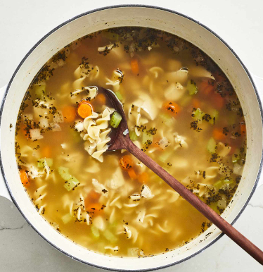

Chicken Noodle Soup

Description
A timeless and comforting dish that's simple to make.
Ingredients
- Onions
- Celery
- Chicken broth
- Vegetable broth
- Chicken
- Noodles
- Carrots
- Basil
- Oregano
Steps
- Sautee onion and celery
- Add the remaining ingredients and bring to a boil
- Reduce heat and simmer for 20 minutes